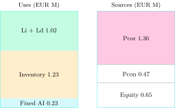

Model
Analysis process
Acquire two or more statements (the firm's, competitors', industry) → check reliability and formal review → choose a reclassification model → re-elaborate data → choose analysis technique → evaluate: should we buy from this firm? grant it credit? how does it perform against competitors? Analysis informs on asset structure, profitability of investments, solvency and liquidity, structural efficiency, ability to generate cash.
Financial reclassification of the balance sheet
| Uses (impieghi) | Sources (fonti) |
|---|---|
| Current assets AC (within 12 months): | Current liabilities Pcor: payables, |
| immediate liquidity Li, deferred | provisions, TFR, accruals due within 12 |
| liquidity Ld (short receivables, | months |
| accruals), inventories R | |
| Fixed assets AI: net fixed assets and | Long-term liabilities Pcon: same items |
| items realizable after 12 months | due after 12 months |
| Equity PN (own capital) |
- Treasury margin MT: can liquid and soon-liquid assets pay short-term debts? should be ≥ 0.
- Net working capital CCN: can current assets (stock included) cover short-term debts? A negative CCN is worse than a negative MT: not even selling inventory would satisfy short-term creditors.
- Liquidity index / acid test IL: excludes inventory, not always liquid without harming operations. Course thresholds: < 0.5 critical, 0.5–1 to monitor, > 1 optimal (indicative, not laws). Current ratio = AC/Pcor.
Worked example
ALFA, reclassified balance sheet 2012 (EUR): Li 78,228; Ld 942,605; inventory 1,228,990; AC 2,249,823; fixed assets 232,458; Pcor 1,363,449; Pcon 472,746; equity 646,086; total 2,482,281.
| Indicator | Computation | Value | Reading |
|---|---|---|---|
| MT | 78,228 + 942,605 − 1,363,449 | −342,616 | cannot cover |
| short debts | |||
| CCN | 2,249,823 − 1,363,449 | 886,374 | positive |
| IL | (2,249,823 − 1,228,990)/1,363,449 | 0.75 | to monitor |
Question: would you grant ALFA a 120-day loan in 2012? MT < 0 and IS = 2.84 (see structure ratios) look critical, but the rise of debt is mainly bank debt, receivables from customers grew strongly 2011–2012 and tangible assets grew 2012–2013: a firm trying to grow that banks were willing to finance — a possible yes, to be checked in the notes. (2013 closed with a loss of 6,375.)
Simple case: cash 20, receivables 50, inventory 40, Pcor 80 → CCN 30, MT −10, current ratio 1.375, acid test 0.875.
Pitfall
Positive CCN can coexist with negative MT (inventory-heavy firms). Ratios are snapshots at year end: seasonality and overdue receivables can hide.
Recall
Draw the reclassified balance sheet; write MT, CCN, IL; compute them for ALFA and argue the loan decision.
Picture

ALFA 2012: liquid assets (green) are smaller than current liabilities (magenta), so MT < 0.